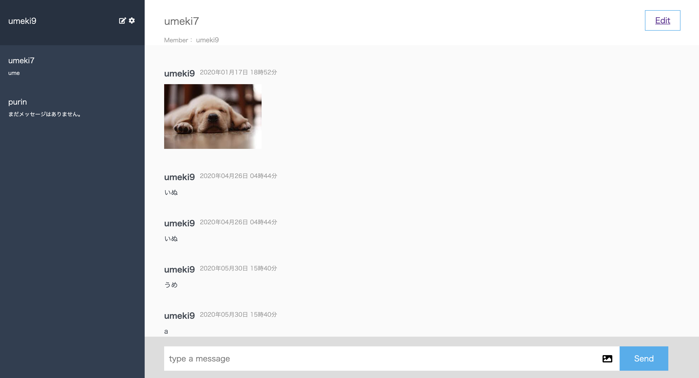
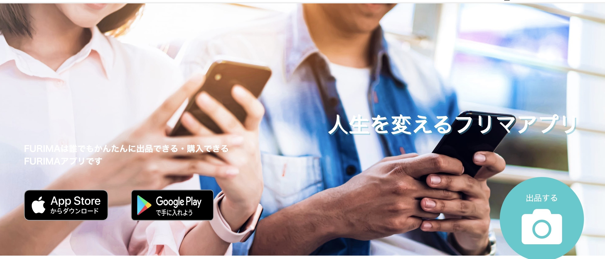
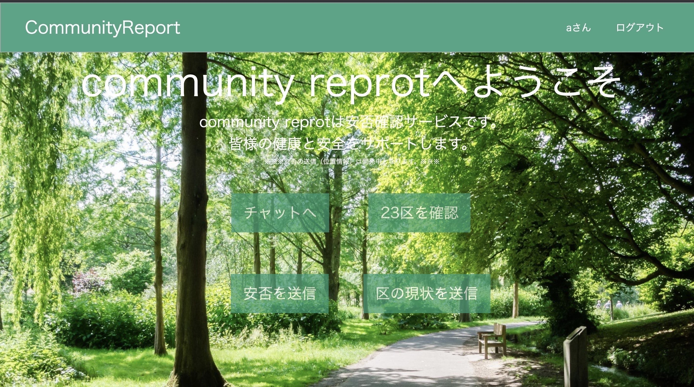
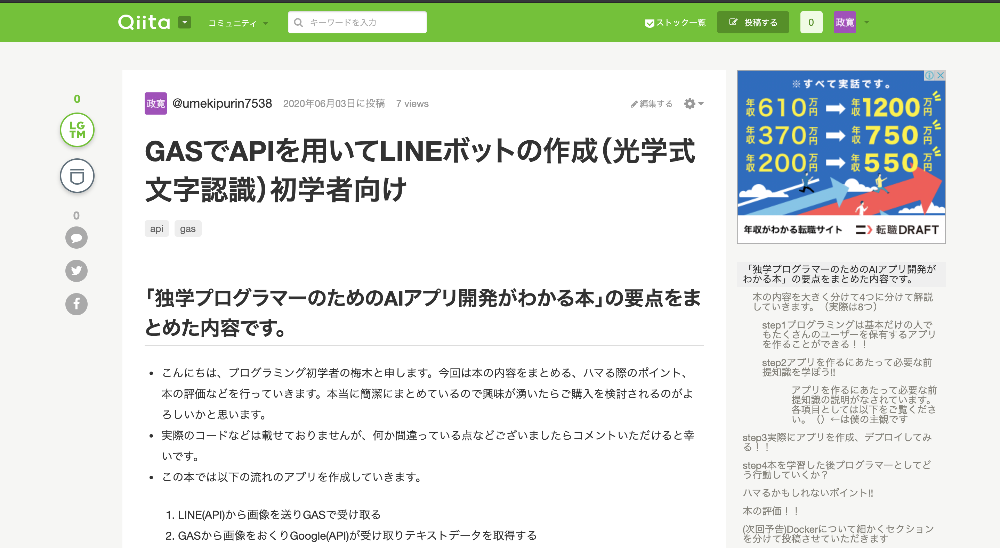

梅木 政寛
1996年11月09日生まれ / 23歳
12月から継続して学習を続けています
※成果物については下記参照ください
人の支えになりかつ誰でも使える、または使って喜んでもらえるアプリなどを開発したいです。
またそのために必要なスキルを身に付けられる環境で仕事をしたいです。
自走し続け成長する喜びを感じ、人として成長し
作りたいと思ったアプリをすぐに作れるようなエンジニアになります
そしてアプリ等を通してお世話になった方々に恩返しができるエンジニアになります
きっかけは多くの経済学者がITはこれからもっと進化していくと発言をしていることや
経済学者のリフキンの限界費用ゼロ社会などを自身の肌で感じたことがきっかけです
「最後に読んだ経済学の本(ホモデウス)ではマルクスが生きていたら資本論なんか読まずにITを勉強しろというだろう」という一文を読み、ITを勉強してみようと思いました。
もの価値とはその財に対して、人々が価値があると信じられるものだと思います。
北朝鮮では韓国のチョコパイが第二の通貨として大規模に流通した事例がありました。それは北朝鮮の人々が必要としており価値があると皆が信じていられたからです。
エンジニアとして転職した際は、価値のあり方を考えまたセキュリティ面など多岐に渡ってお客様に価値のある会社だと思ってもらえるように行動します。
制作したアプリ
chat-spaceの実行画面動画
制作したアプリへのリンク
実行画面動画
制作したゲームの実行画面動画
実行画面動画
トップページ
実行画面動画
投稿したQiita記事の一部
今までアウトプットを意識していなかったのですが、ポートフォリオ作成を機にQiitaなどの記事でアウトプットしていくことにしました。